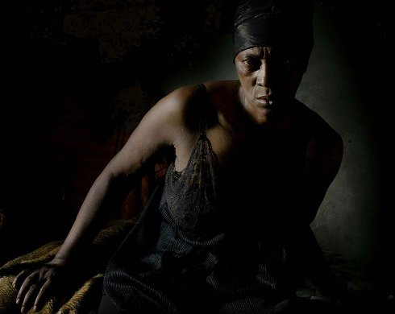

{kind=link}
Vitalina Varela

Pedro costa
Thursday | 10 oct 7.00 pm | filmmuseum | opening
Suddenly, in the sumptuous darkness of a neighborhood haunted by solemn shadows, the deep red of bloody sheets. Vitalina Varela is too late; all she can do now is settle her husband’s affairs. She will mourn no unfortunates: facing bitter and fallen men, she resolves to rebuild the memory of a solid shared house in Cape Verde, blueprint by blueprint and wall by wall, fighting the sad reality of a life that could not be built under a decent roof in Portugal. (Antoine Thirion, Locarno Film Festival)
Pedro Costa born in Lisbon in 1959. Majored in history and literature at the University of Lisbon. Studied at the National Film School and worked as an assistant director with Joan Botelho and Jorge Silva Melo. He is one of the most respected contemporary portuguese directors.
|
| Films O sangue 1990 | Casa de lava 1994 | Ossos 1997 | No quarto da Vanda 2000 | Où gît votre sourire enfoui? 2001 (2. UX) | 6 Bagatelas 2001 (2. UX) | Juventude em marcha 2006 (2. UX) | Ne change rien 2009 (5. UX) | Horse Money 2014 | Vitalina Varela 2019
|